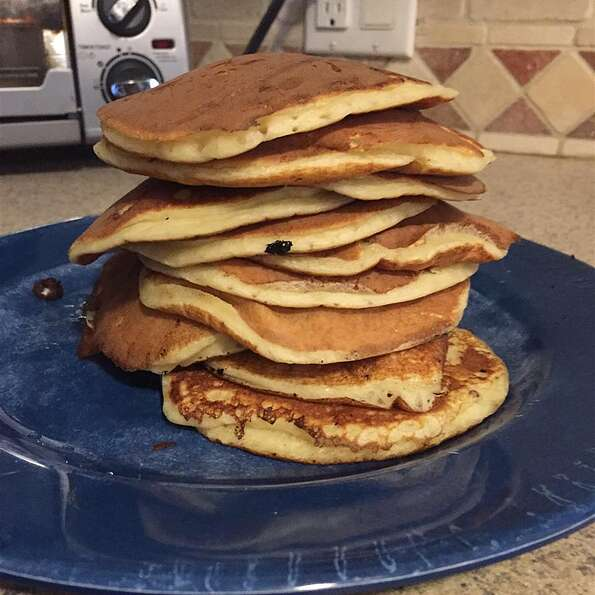

Kefir Chocolate Chip Pancakes

I don't always make pancakes, but when I do, I prefer kefir chocolate chip pancakes.
I love traditional pancakes, but kefir gives these an extra dimension of fullness.
When making these pancakes, I also highly recommend experimenting with various flavored
kefirs, such as strawberry or pomegranate. I don't think of pancakes as healthy in
general, but this recipe calls for only 2 teaspoons of sugar. If you include chocolate
chips, you don't even need to use maple syrup. Enjoy some orange juice or a coffee with these.
Ingredients
- 1/2 cup and 1 tablespoon and 1 teaspoons all-purpose flour
- 4/5 teaspoon white sugar
- 1/2 teaspoon baking powder
- 1/3 teaspoon baking soda
- 1/4 teaspoon salt
- 2/3 cup kefir
- 2/3 eggs
- 1 1/3 ounces chocolate chips, or more to taste
Method
-
Mix flour, sugar, baking powder, baking soda, and salt together in a large bowl.
Add kefir and eggs; stir until batter is moist but still lumpy. Fold in chocolate chips.
-
Heat a lightly oiled griddle over medium-high heat. Drop batter by large spoonfuls onto
the griddle and cook until bubbles form and the edges are dry, 3 to 4 minutes. Flip and
cook until golden on the other side, 2 to 3 minutes. Repeat with remaining batter.
Home Page